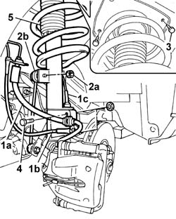
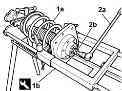
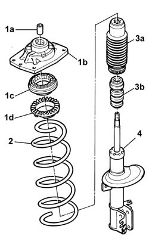

4410A12 FRONT SUSPENSION DAMPER (ONE), LH OR RH - FOR MCPHERSON STRUT SYSTEM - INCLUDES DISMANTLING/RE-BUILDING OF ASSEMBLY AT BENCH R R
- Path
- Procedures > 44 SUSPENSION AND WHEELS > 4410 FRONT SUSPENSION > 4410A FRONT DAMPERS AND SPRINGS > 4410A12 FRONT SUSPENSION DAMPER (ONE), LH OR RH - FOR MCPHERSON STRUT SYSTEM - INCLUDES DISMANTLING/RE-BUILDING OF ASSEMBLY AT BENCH R R
- Kind
- repair procedure (removal / refitting; the operation number is the code)
- Applies to
- all engines; all production periods
- Interactive page
- https://sloeber94.github.io/elrnDB-fUlss/en/#/179007371
Applies to: all engines; all production periods
 Removing
Removing
 Refitting
RefittingProceed as follows to remove the left front shock absorber.
. Position the vehicle on a lift.
Op. 4450B02 LEFT FRONT WHEEL R R
1. Release the brake pipe (1a), the brake pad wear sensor wiring (1b) and the ABS sensor wiring (1c) from the fastenings on the shock absorber.
2. Undo the fixing nut (2a) and disconnect the anti-roll bar rod (2b).
Loosen the lower fixing bolts.
3. Undo the upper bolts fixing the shock absorber to the bodyshell.
4. Undo the lower bolts fixed to the steering knuckle.
5. Release and remove the shock absorber spring assembly.

Applies to: all engines; all production periods
1. Position the shock absorber spring assembly (1a) on the special tool (1b).
Compress the shock absorber coil spring using the pneumatic tool.
2. Using a suitable spanner (2a), lock the shock absorber stem and undo the nut (2b).

Applies to: all engines; all production periods
1. Remove the bush (1a), the shim (1b), the ball bearing (1c) and the spacer (1d).
2. Release the coil spring using the pneumatic tool and remove it.
3. Remove the mounting (3a) and the spacer (3b).
4. Remove the shock absorber from the pneumatic tool.
Description | Code | Function | |
|---|---|---|---|
. | Support | 1.874.555.000 | Dismantling/reassembling front shock absorbers |

Applies to: all engines; all production periods
Proceed in the same way to remove the right front shock absorber.
Applies to: all engines; all production periods
Refitting
RemovingProceed as follows to refit the left front shock absorber.
Position the shock absorber on the special tool.
Position the spacer, the gaiter and the coil spring.
Compress the coil spring using the pneumatic tool.
Position the spacer, the ball bearing, the shim and the bush.
Using a suitable spanner, lock the shock absorber stem and tighten the fixing nut to the recommended torque.
Value daNm | Fastening | Component | Ø | |
|---|---|---|---|---|
. | 3.5 | Nut | FRONT SHOCK ABSORBERS (S.M.) | - |
Using the pneumatic tool, release the spring and remove the shock absorber spring assembly from the pneumatic tool.
Position the shock absorber spring assembly on the vehicle.
Tighten the upper bolts fixing the assembly to the bodyshell and the lower bolts fixing it to the steering knuckle to the recommended torque.
Value daNm | Fastening | Component | Ø | |
|---|---|---|---|---|
. | (Fastening to bodyshell) 3.5 | Bolt | FRONT DAMPER TOP ATTACHMENT | - |
Value daNm | Fastening | Component | Ø | |
|---|---|---|---|---|
. | (Fastening to steering knuckle) 9.0 | Bolt | FRONT DAMPER BOTTOM ATTACHMENT | - |
Connect the anti-roll bar rod and tighten the fixing nut to the recommended torque.
Value daNm | Fastening | Component | Ø | |
|---|---|---|---|---|
- | 5.5 | Nut | FRONT ANTI-ROLL BAR ANCHORAGE LINK REAR | - |
Secure the brake pipe, the brake pad wear sensor wiring and the ABS sensor wiring to the fastenings on the shock absorber.
Op. 4450B02 LEFT FRONT WHEEL R R
Remove the vehicle from the lift.
Proceed in the same way to refit the right front shock absorber.
Topics linked from this page (2)
- 4450A10 FRONT WHEEL GEOMETRY - CHECK USING OPTICAL EQUIPMENT - INCLUDES ADJUSTMENT IF NECESSARY
- 4450B02 LEFT FRONT WHEEL R R